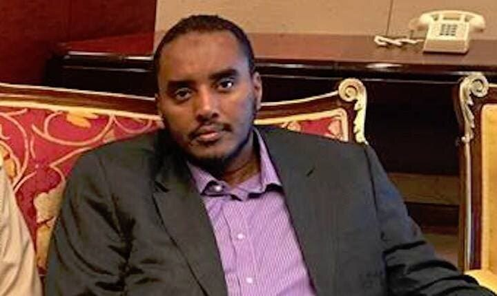

Taliyaha Nisa oo L Sheegay Inuu Yahay Alqaacidda

Wax badan ayey ka hadleen warbaahinta iyo siyaasiyiinta soomaaliyeed in hayadda NISA iyo ururka alshabaab noqdeen kuwa isku milmay lana kala aqoonin,isku milmidaas ayaa waxaa loo sababeeyey inuu iska leeyahay ninka hadda NISA ka ah agaasimaha lana yiraahdo Fahad Yaasiin,ninkaan ayaa horay waxa uu ahaay wariye u shaqeeya tv-ga ku hadla afka carabiga ee la yiraahdo Aljazeera saldhigiisuna yahay Dooxa caasimadda dalka Qadar. Wariye Fahad ayaa waxa uu waraysiyo fara badan ka soo qaaday hogaamiyeyaasha kooxda alshabaab ee gacan saaraka la leh ururka Alqaacidda waqtigii uu ku sugnaay bariga afrika sida Sheekha mayalka adag una xiran dawladda soomaaliyeed ee la yiraahdo Sheekh Xasan Daahir Aweys,mana ha mid qarsoodi ah oo cid walba oo soomaali ah waa eey ogtahay in wariye Fahad yahay nimeey ku adeegato dawladda Qadar kuna bixiso malaayiin doolar si uu ugu fuliyo danaheeda gaarka ha eey ka leedahay soomaaliya hadeey noqon lahayd in dalka soomaaliya madaxweyne looga dhigo hadba ninkeey raali ka tahay dawladda Qadar sida madaxweynaha hadda taladda haayo Maxamed C/laahi Farmaajo oo kursiga ku yimid lacag eey bixisay dawladda Qadar siisayne kuwa uu codkooda beeca u yahay kana tirsan baarlamaanka soomaliyeed. Micheal Rubin oo wax ku qora wargayska Washington Examinar horayne u soo noqday sarkaal ka tirsan wasaarada difaaca Maraykanka ee Bentagonka ayaa shalay oo ahayd Isniin kuna beegneed lix iyo tobanka bisha noofembar/2020-ka waxa uu maqaal ku qoray wargayska Washington Examinar waxa uuna maqaalkiisa cinwaan uga dhigay TALIYAHA SIRDOONKA SOOMAALIYA WAA MID LA SHAQEYSTO KOOXDA KU XIRAN ALQAACIDDA(ALASHABAAB),WAA MAXAY SABABTA AAN U MAALGELINAYNO?,qoraalka ayaa waxa uu si cad u kala dhigaa raadka dawladda Qadar ku leedahay siyaasadda soomaaliya iyo cidda eey u marto,xiriirka alshabaab iyo NISA iyo waxyaaba kale oo aan horay looga warhayn kuna saabsan wariye Fahad.
Hub Daacish Leeyahay oo La Qabtay

Sida eey sheegtay wasaaradda arrimaha gudaha ee dalka Ciraaq maanta oo Sabti ah 31/10/2020-ka waxaeey dileen mid ka mida dagaalyahandda Daacish ee dalkaas Ciraaq,waxaane ciidamadda amaanka Ciraaq u suurtagashay ineey gacanta ku soo dhigaan hub iyo waxyaaba kale eey leeyihiin dagaalyahanadda Daacish ka dib markii la helay 13-god eey Daacish wax ku qarsato,wasaaradda ayaa sheegtay ineey sameeysay hawlgal qorsheysan kaaso laga sameyey gobolka Karkuuk ee waqooyiga Ciraaq,waxyaabaha eey ciidamadda Ciraaq soo qabteen ayaa kala ahaay 12-Bambo oo ah kuwa dhulka lagu duugo,10-fuusto eey ka buuxaan walxaha( C4 ) oo ah walxo laga sameeyo qaraxa aad u xoogan,suumanka la isku qarxiyo, 4-Mooto laba lugooleey, cagaf Cagaf iyo waxyaaba kale oo laga sameeyo waxyaabaha qarxa. XIGASHO DAILY SABAH/ARABIC.
Soomaaliya oo Noqotay Dalka Lagu dilo Warfidiyeenadda

Somaaliya waxa eey ka mod tahay dalalka qaaradda afrika ugu liita dhinaca dhawritaanka xuquuqda bani’aadamka waxaana ka dhaca dilal aan loo meel dayin oo aan kala sooc lahayn loona geysto qeybaha eey ka koobantahay busha weynta soomaaliyeed,dhibaatadda teeda ugu baaxadda weyn ayaa waxa eey ku dhacdaa shaqaalaha ka hawlgala warbaahinta qeybaheed kala gedisan sababtuna waxa eey tahay ineeysan soo gudbin xaqiiqooyinka qarsoon ee dhex jira hayadaha dawladda markaas jirta.
Tan iyo markii la doortay Madaxweyne Farmaajo(Feb-2017)-kii waxa soo kordhaayey waxyeeleynta warfidfiyeenadda soomaaliyeed gaar ahaan kuwa ka hawlgala caasimadda Muqdisho,waxaane dhacday in rag wariyeyaal ah loo xiro xog eey soo gudbiyeen balse dawladda federaalka soomaaliyeed eeysan jeclaysan tusaale ahan wariye Gurbiye ayaa soo bandhigay in isbitaalka martiini laga qaaday mashinkii neefsashada ka kaalmeeyhaayey dadka qaba cudurka Covid-19 kuna sugan isbitaalka Martiini ee magaaladda Muqdisho,arrintaas ayaa waxaa ka carootay madaxtooyadda soomaaliya waxaane hayadaha amaanka la amray ineey soo xiraan Wariye Gurbiye waxaane sidaas xabsiga dhexe loogu diray wariye Gurbiye oo soo bandhigay xaqiiqadda ku saabsan mashinkii neesashadda ee la qaatay lana geeyey madaxtooyadda.
Wariye Abuja waxa uu ka mid ahaay wariyeyaasha soomaaliyeed ee la dulmiyey sannadkaan 2020-ka muddo dhawr bilood ahne u xirnaay dawladda federaalka soomaliyeed,abuja ayaa lagu soo eedeeyey inuu ka tirsan yahay kooxda Alshabaab qeybna ka haay geber lagu dilay degmada B/dheere ee gobolka banaadir,abuuja ayaa la horkeenay maxkamadda ciidamadda qalabka sida ee soomaaliyeed waxaane lagu waayey dhammaan eedeymihii lagu soo eedeeyey wax uuna dib u helay xuriyadiisa ayadoo aan la siin wax meg dhaw ah,arrinta dhabta ah ee wariye abuja loo xiray ayaa ah inuu qoray qoraal uu kaga hadlaayey ciidamadda amaanka uuna ku soo bandhigay ciidamadda ma kuwa dhibaateeyo shacabkaa mase waa kuwa u gargaara shacabka waane taas tan eeysan jeclaysan dawladda federaalka soomaaliyeed oo ha dhaqankeeda saxaafadda u muuqda mid laga soo min guuriyey taliskii Maxamed Siyaad Barre oo aan dalka u ogoleeyn ineey jirto saxaafad ka madax baan maamulkiisa kali taliska ahaay,dalka kama eeysan jirin warbaahin si gaara loo leeyahay warbaahintii jirtayne waxa eey ahayd mid hoos tagta wasaaradiisa warfaafinta iyo hanuuninta dadweynaha waxa ka baxaayana waxa eey ahaayeen kuwa soo maray faafreeb.
Warbixin uu soo saaray gudiga difaaca warfidiyeenadda maalintii Arbacadda ah 28/10/2020-ka ayuu gudigu ku sheegay in 10-dal noqdeen kuwa uu ka dhaco dilalka loo geeysto warfidiyeenadda,Soomaaliya,Suuriya,Ciraaq iyo Koonfurta Suudaan ayaa noqday afarta dal ee ugu horeeyo adduunka ee lagu dhibaateeyo warfidiyeenadda. Tan iyo markii uu gudiga difaaca warfidiyeenadda bilaabay inuudiiwaan geliyo waxyeeladda loo gaysto warfidiyeenadda marka laga soo bilaabo nsannadkii 1992-dii gudiga waxa eey diiwaan geliyeen 1386 saxafi in lagu dilay dunida dacaladeeda,1772-warfidiyenna xabsi loo taxaabay,warbixintu ma sheegin inta wariye ee soomaaliya lagu xiray amaba lagu dilay.
Maxkamad Ku Taalo Maraykanka oo Looga Yeeray Bin Salmaan
Maxkamad ku taalo dalkaasi Maraykanka ayaa u yeertay dhaxala sugaha dalka boqortooyadda sacuudiga Maxamed Bin Salmaan iyo sagaal qofood oo kale,arrinta loogu yeeray ragaan ayaa ah dacwad uu ka gudbiyey la taliyihii hore ee Maxamed Bin Salmaan ninka la yiuraahdo Sacad Aljabri kaasoo hadda magangalyo ugu sugan dalkaasi kanada caruurtiisa ayaa weli jirta dalka Sacuudiga,ninkaan ayaa Bin salmaan iyo raga kale ku eedeeyey ineey rabaan ineey dilaan. Warbaahinta CNN-ta ayaa habeenkii khamiista(10/29/2020)-ka sheegtay in maxkamd ku taalo Washington warqad loogu yeeraayo u dirtay Maxamed BIn Salmaan iyo sagaal kale oo sacuudiyiin ah iyo hayadda samafalka ee Maski,dhammantood ayaa loo haystaa dacwad uu ka gudbiyey la taliyihii hore ee amniga Sacad Aljabri. XIGASHO DAILY SABAH/ARABIC.